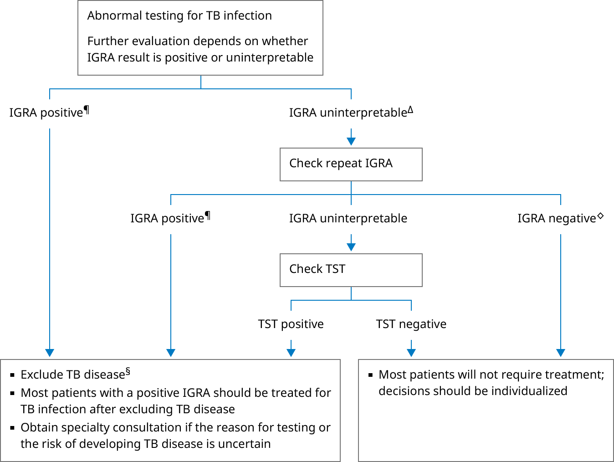

AFB: acid-fast bacillus; IGRA: interferon-gamma release assay; NAA: nucleic acid amplification; TB: tuberculosis; TST: tuberculosis skin test.
* A positive test result supports, but cannot be used to establish, a diagnosis of TB disease.
¶ Review numeric values. If only slightly above threshold for a positive test, consider repeating the IGRA. Individuals with a small elevation are more likely to undergo spontaneous reversion to negative.
Δ Uninterpretable results indicate uncertain likelihood of Mycobacterium tuberculosis infection due to a problem with laboratory processing or a patient-related factor. The two commercially available IGRA assays differ in the way uninterpretable results are defined by the manufacturer. For the QuantiFERON assay, the result is reported as indeterminate. For the T-SPOT.TB assay, the result is reported as borderline or invalid. In either case, management is the same (ie, retesting with TST or IGRA).
◊ TB infection is less likely in those with a negative, compared with positive, screening test; however, false-negative results can occur.
§ Refer to additional UpToDate algorithm on the approach to the interpretation of sputum AFB smear and NAA test for diagnosis of pulmonary TB in adults. Individuals with confirmed or suspected TB must be reported to a public health authority promptly.